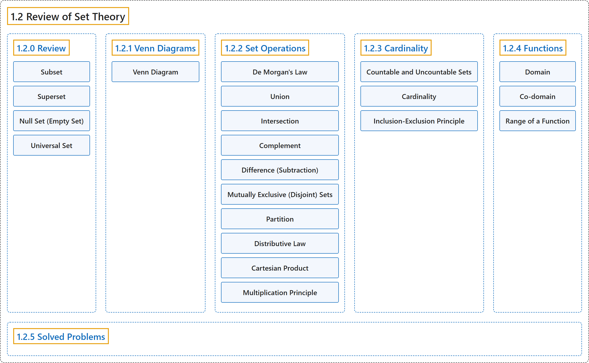

1.2 Review of Set Theory
Classification

Glossary
| Term | Definition | 中文翻译 | Source |
|---|---|---|---|
| 1.2 Review of Set Theory 集合论回顾 |
(No definition) | （无定义） | Pishro-Nik, 2014, section 1.2 |
| 1.2.0 Review 回顾 |
(No definition) | （无定义） | Pishro-Nik, 2014, section 1.2.0 |
| Subset 子集 |
"Set \(A\) is a subset of set \(B\) if every element of \(A\) is also an element of \(B\)." | 若 \(A\) 的每个元素也都是 \(B\) 的元素，则称集合 \(A\) 是集合 \(B\) 的子集。 | Pishro-Nik, 2014, section 1.2.0 |
| Superset 超集 |
"Equivalently, we say \(B\) is a superset of \(A\), or \(B \supset A\)." | 等价地，我们称 \(B\) 是 \(A\) 的超集，或写作 \(B \supset A\)。 | Pishro-Nik, 2014, section 1.2.0 |
| Null Set (Empty Set) 空集 |
"The set with no elements, i.e., \(\emptyset=\{ \}\) is the null set or the empty set." | 没有任何元素的集合，即 \(\emptyset=\{ \}\)，称为零集或空集。 | Pishro-Nik, 2014, section 1.2.0 |
| Universal Set 全集 |
"The universal set is the set of all things that we could possibly consider in the context we are studying." | 全集是在我们所研究的情境中可能考虑的所有事物构成的集合。 | Pishro-Nik, 2014, section 1.2.0 |
| 1.2.1 Venn Diagrams 维恩图 |
(No definition) | （无定义） | Pishro-Nik, 2014, section 1.2.1 |
| Venn Diagram 韦恩图（Venn 图） |
"Venn diagrams are very useful in visualizing relation between sets. In a Venn diagram any set is depicted by a closed region." | 韦恩图非常适合直观表示集合之间的关系。在韦恩图中，任何集合都用一个封闭区域表示。 | Pishro-Nik, 2014, section 1.2.1 |
| 1.2.2 Set Operations 集合运算 |
(No definition) | （无定义） | Pishro-Nik, 2014, section 1.2.2 |
| De Morgan's Law 德摩根律 |
"De Morgan's law For any sets \(A_1\), \(A_2\), \(\cdots\), \(A_n\), we have \((A_1 \cup A_2 \cup A_3 \cup \cdots A_n)^c=A_1^c \cap A_2^c \cap A_3^c\cdots \cap A_n^c\); \((A_1 \cap A_2 \cap A_3 \cap \cdots A_n)^c=A_1^c \cup A_2^c \cup A_3^c\cdots \cup A_n^c\)." | 德摩根律 对任意集合 \(A_1\)、\(A_2\)、\(\cdots\)、\(A_n\)，有 \((A_1 \cup A_2 \cup A_3 \cup \cdots A_n)^c=A_1^c \cap A_2^c \cap A_3^c\cdots \cap A_n^c\)；\((A_1 \cap A_2 \cap A_3 \cap \cdots A_n)^c=A_1^c \cup A_2^c \cup A_3^c\cdots \cup A_n^c\)。 | Pishro-Nik, 2014, section 1.2.2 |
| Union 并集 |
"The union of two sets is a set containing all elements that are in \(A\) or in \(B\) (possibly both)." | 两个集合的并集是包含所有属于 \(A\) 或属于 \(B\)（可以两者都属于）的元素的集合。 | Pishro-Nik, 2014, section 1.2.2 |
| Intersection 交集 |
"The intersection of two sets \(A\) and \(B\), denoted by \(A \cap B\), consists of all elements that are both in \(A\) \(\underline{\textrm{and}}\) \(B\)." | 集合 \(A\) 与 \(B\) 的交集记作 \(A \cap B\)，由既属于 \(A\) 又属于 \(B\) 的所有元素组成。 | Pishro-Nik, 2014, section 1.2.2 |
| Complement 补集 |
"The complement of a set \(A\), denoted by \(A^c\) or \(\bar{A}\), is the set of all elements that are in the universal set \(S\) but are not in \(A\)." | 集合 \(A\) 的补集记作 \(A^c\) 或 \(\bar{A}\)，是全集 \(S\) 中不属于 \(A\) 的所有元素构成的集合。 | Pishro-Nik, 2014, section 1.2.2 |
| Difference (Subtraction) 差集 |
"The difference (subtraction) is defined as follows. The set \(A-B\) consists of elements that are in \(A\) but not in \(B\)." | 差集（减法）定义如下。集合 \(A-B\) 由属于 \(A\) 但不属于 \(B\) 的元素组成。 | Pishro-Nik, 2014, section 1.2.2 |
| Mutually Exclusive (Disjoint) Sets 互斥集合（不相交集合） |
"Two sets \(A\) and \(B\) are mutually exclusive or disjoint if they do not have any shared elements; i.e., their intersection is the empty set, \(A \cap B=\emptyset\)." | 若两个集合 \(A\) 和 \(B\) 没有任何公共元素，即它们的交集为空集 \(A \cap B=\emptyset\)，则称它们互斥或不相交。 | Pishro-Nik, 2014, section 1.2.2 |
| Partition 划分 |
"In general, a collection of nonempty sets \(A_1, A_2,\cdots\) is a partition of a set \(A\) if they are disjoint and their union is \(A\)." | 一般地，若一族非空集合 \(A_1, A_2,\cdots\) 互不相交且它们的并集为 \(A\)，则称其为集合 \(A\) 的一个划分。 | Pishro-Nik, 2014, section 1.2.2 |
| Distributive Law 分配律 |
"Distributive law For any sets \(A\), \(B\), and \(C\) we have \(A \cap (B \cup C)=(A \cap B) \cup (A\cap C)\); \(A \cup (B \cap C)=(A \cup B) \cap (A\cup C)\)." | 分配律 对任意集合 \(A\)、\(B\) 和 \(C\)，有 \(A \cap (B \cup C)=(A \cap B) \cup (A\cap C)\)；\(A \cup (B \cap C)=(A \cup B) \cap (A\cup C)\)。 | Pishro-Nik, 2014, section 1.2.2 |
| Cartesian Product 笛卡尔积 |
"A Cartesian product of two sets \(A\) and \(B\), written as \(A\times B\), is the set containing ordered pairs from \(A\) and \(B\)." | 集合 \(A\) 与 \(B\) 的笛卡尔积记作 \(A\times B\)，是由来自 \(A\) 和 \(B\) 的有序对构成的集合。 | Pishro-Nik, 2014, section 1.2.2 |
| Multiplication Principle 乘法原理 |
"If you have two finite sets \(A\) and \(B\), where \(A\) has \(M\) elements and \(B\) has \(N\) elements, then \(A \times B\) has \(M \times N\) elements. This rule is called the multiplication principle and is very useful in counting the numbers of elements in sets." | 若有两个有限集合 \(A\) 和 \(B\)，其中 \(A\) 有 \(M\) 个元素，\(B\) 有 \(N\) 个元素，则 \(A \times B\) 有 \(M \times N\) 个元素。这一规则称为乘法原理，在计算集合的元素个数时非常有用。 | Pishro-Nik, 2014, section 1.2.2 |
| 1.2.3 Cardinality 基数 |
(No definition) | （无定义） | Pishro-Nik, 2014, section 1.2.3 |
| Countable and Uncountable Sets 可数集与不可数集 |
"Set \(A\) is called countable if one of the following is true if it is a finite set, \(\mid A \mid < \infty\); or it can be put in one-to-one correspondence with natural numbers \(\mathbb{N}\), in which case the set is said to be countably infinite. A set is called uncountable if it is not countable." | 若满足下列条件之一，则称集合 \(A\) 可数：它是有限集，\(\mid A \mid < \infty\)；或者它可与自然数集 \(\mathbb{N}\) 建立一一对应，此时称该集合为可数无限集。若集合不可数，则称其为不可数集。 | Pishro-Nik, 2014, section 1.2.3 |
| Cardinality 基数 |
"Here we need to talk about cardinality of a set, which is basically the size of the set. The cardinality of a set is denoted by \(\vert A\vert\)." | 这里需要谈谈集合的基数，它基本上就是集合的大小。集合的基数记作 \(\vert A\vert\)。 | Pishro-Nik, 2014, section 1.2.3 |
| Inclusion-Exclusion Principle 容斥原理 |
"Before discussing infinite sets, which is the main discussion of this section, we would like to talk about a very useful rule: the inclusion-exclusion principle. For two finite sets \(A\) and \(B\), we have \(\vert A \cup B \vert =\vert A\vert +\vert B\vert -\vert A \cap B\vert .\)" | 在讨论无限集（这是本节的主要内容）之前，我们先谈一条非常有用的规则：容斥原理。对于两个有限集合 \(A\) 和 \(B\)，有 \(\vert A \cup B \vert =\vert A\vert +\vert B\vert -\vert A \cap B\vert .\) | Pishro-Nik, 2014, section 1.2.3 |
| 1.2.4 Functions 函数 |
(No definition) | （无定义） | Pishro-Nik, 2014, section 1.2.4 |
| Domain 定义域 |
"A function \(f\) is a rule that takes an input from a specific set, called the domain, and produces an output from another set, called co-domain." | 函数 \(f\) 是一条规则，它从某个特定集合（称为定义域）中取一个输入，并在另一个集合（称为陪域）中产生一个输出。 | Pishro-Nik, 2014, section 1.2.4 |
| Co-domain 陪域 |
"A function \(f\) is a rule that takes an input from a specific set, called the domain, and produces an output from another set, called co-domain." | 函数 \(f\) 是一条规则，它从某个特定集合（称为定义域）中取一个输入，并在另一个集合（称为陪域）中产生一个输出。 | Pishro-Nik, 2014, section 1.2.4 |
| Range of a Function 值域 |
"We define the range of a function as the set containing all the possible values of \(f(x)\). Thus, the range of a function is always a subset of its co-domain." | 我们将函数的值域定义为包含 \(f(x)\) 所有可能取值的集合。因此，函数的值域总是其陪域的子集。 | Pishro-Nik, 2014, section 1.2.4 |
| 1.2.5 Solved Problems 例题详解 |
(No definition) | （无定义） | Pishro-Nik, 2014, section 1.2.5 |
References
Pishro-Nik, H. (2014). Introduction to probability, statistics, and random processes. Kappa Research. Retrieved October 28, 2026, from https://www.probabilitycourse.com/